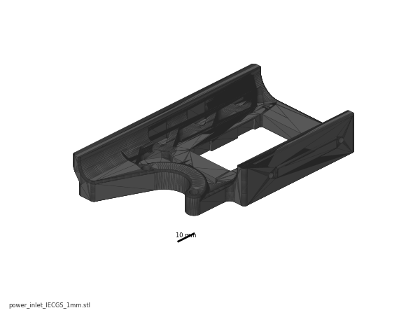
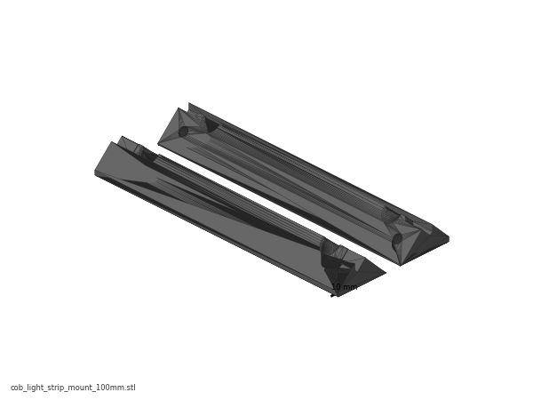
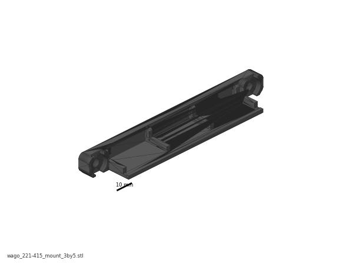
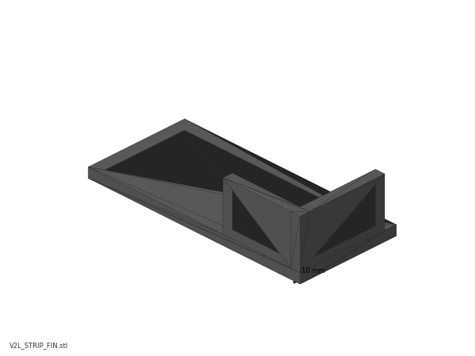
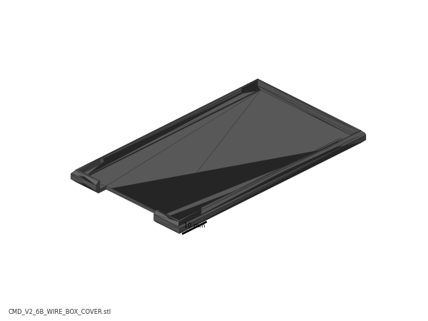

Before you start Chapter 10¶
Before you start · Chapter 10 — Wiring and Checkpoint #1
You build every harness in the machine: mains, 24 V, motors, sensors, lighting and the toolhead cable. The chapter ends at the gate that must pass before the machine is ever plugged in.
What you're building in this chapter: Four systems of wires. The mains side carries wall power: the C14 inlet (the socket the cord plugs into, with its switch and fuse), three WAGO lever blocks for Live, Neutral and earth, the 24 V PSU (power supply), and the SSR (solid-state relay) that lets the firmware switch the mains bed heater. It goes in after the work above the deck, in LDO's order: inlet, WAGO bus and PSU, proved with a meter and powered once at LDO's Checkpoint #1, then the SSR and bed leads, wired dead. The 24 V side runs from the PSU to the Leviathan mainboard, to the board's separate stepper supply, and to the USB adapter PCB that feeds the toolhead. The signal side is everything the machine senses and lights with: six motor cables, the XY endstop pod, the nozzle probe that sets Z=0, the bed thermistor, two COB light strips, the bay and filter fans, and the Pi's screen, network and USB links. The three drag chains, X, Y and Z, let every cable follow the moving gantry for years without wearing out. The work above the deck and the chains come first, with the printer upright, as LDO's guide puts them; then, on its right side, the mains and Checkpoint #1, the SSR and bed leads, and the board, 24 V, umbilical and bay. Section numbers are names, like step ids, not the order you work in: Sections 3 and 4, then 1, 2 and 2b, then 5 to 8. It ends unplugged, open and metered.
Time: 5.0–7.0 h hands-on, first build (survey §5.1, §7.2).
Sessions: 14 × ~30 min. Each stopping point below gives its own minutes, and every minute figure in this chapter is a first-build estimate worked out from the time range and the step count.
Prerequisites:
- Ch 03 is done: the build plate is screwed down, and its heater and thermistor leads hang loose above the deck, none through it.
- Ch 06 is done: the gantry is in and the Z belts are on. The gantry must move by hand over its full Z travel, because that is what sets the slack in the chains.
- Ch 07 is done: the probe wires already run along the X extrusion (manual p.143).
- Ch 08 is done: Stealthburner + CW2.5 + Nitehawk-SB V2 assembled, every toolhead-side connector seated, and the USB-adapter PCB stack built.
- Ch 09 is done: the DIN rails; the B11 conduits (the DC loop at 09.6 and the AC conduit at 09.36, every lid off; layout v3); the Leviathan on its brackets; the Raspberry Pi on its standoffs with the HAT power adapter; the nozzle-probe PCB built and mounted; the bed WAGO mount fitted above the deck on the left bed extrusion; the SSR on its DIN bracket; the USB-adapter PCB on its DIN clip. Ch 09 also fitted the inlet panel with its IEC module and mounted it on the rear extrusion (Steps 09.10–09.12), and built and mounted the mains WAGO block (Step 09.13). Nothing in this chapter builds those; 10.4–10.7 only confirm and label them.
- Print batches: B05 (Z joints and the Z chain parts) and B07 (electronics bay and lighting: the eight COB mounts across its three plates, and the 3×5 WAGO mount). B07 also carries
power_inlet_IECGS_1mmon plate B07-P1 (moved out of B08, index correction #11). One B08 part is needed early:mount.stl(plate B08-P4) gets its two inserts at Step 10.35, then goes together with the B02[a]_faceplateat Step 10.50, because the touchscreen module has to exist before its ribbon is latched; so Ch 11 Steps 11.5–11.6 are done from there. Both are pre-kit prints. Nothing else from B08 is needed before Ch 11. - Print batch B11:
V2L_STRIP_FINand the AC conduit lids, both in bin 10-lids-AC, for Step 10.80. - Camera: its 3 m USB cable in hand for Step 10.81, before the slot covers go on at 10.38. Its mount prints in B12 and is fitted in Ch 11 Part C.
- DIN-rail earth lead, bought before you start: a green/yellow lead with an M5 ring terminal, an M5×12 BHCS and an M5 serrated lock washer, for Step 10.82. None of it is in the kit.
Tools
- Multimeter, mandatory. It needs continuity (a beeper), a 2 MΩ or 20 MΩ resistance range you can select by hand, and a DC volts range. The L↔N test at 10.19, 10.21 and 10.78 reads 100 kΩ or more, or
OL, on that range, because the PSU input sits across L and N. No multimeter, no power-on. - 2.5 mm flat-blade screwdriver (supplied), for the WAGO levers, the plug-type terminals and the drag-chain latches
- PH2 Phillips screwdriver, for the PSU terminal block and the SSR terminals
- Hex keys 2, 2.5, 3 and 4 mm
- Flush cutters, small long-nose pliers, and tweezers (for the endstop repin)
- Nutopress Pro insert press with its M3 tip. Use the X-Tronic iron with the LDO brass tip only for a part that will not fit under the press. All twenty inserts go in one pass at step 10.35 (COB mounts ×16, the two Z chain retainer brackets ×1 each, the TFT mount ×2 for step 10.50), so the press is hot once and never during an electrical segment.
- Label maker, or the cable tags supplied in the kit
Consumables: zip ties (of the 100 supplied, this chapter uses 30–40), VE0508 ferrules ×5 (not used on the mains: LDO names them for a re-terminated hotend heater lead, Ch 08), a VHB pad for the strip fin, and IPA with a lint-free cloth for the extrusion slots before the covers go on.
Read first
- Mains is the one part of this build that can kill you. Nothing gets plugged in until Checkpoint #1 passes with a meter. LDO says mains wiring should only be done by certified people trained in local rules and safety standards. If that is not you, stop at step 10.8, the first mains run, and have Sections 1, 2 and 2b done by someone who is.
- Set the PSU's 115/230 V switch before any mains wiring, and check it again at Checkpoint #1. Getting it wrong destroys the PSU the first time it is switched on.
- Keep every wire loose inside every drag chain. Tight wires wear out and break. It is LDO's most repeated warning, and the toolhead cable (the umbilical) is the one it kills.
- Close nothing until Checkpoint 10 passes, except the AC lids at 10.80: no DC duct covers, no skirts, no bottom panel. Opening a closed bay again costs an hour and tempts you to skip the meter.
- Never plug or unplug a motor, or the umbilical's Micro-Fit plug, with power on. It can kill the motor drivers, the Nitehawk toolboard or the Pi.
For reference: hardware totals, sources and video
Printed parts
Parts arrive in the bins named below (see the bin map in print/README.md#bins); check the bin label's list before you start.
| Looks like | STL | Bin | Qty | Colour |
|---|---|---|---|---|
 |
power_inlet_IECGS_1mm.stl (Voron-2 STLs/Skirts/) |
09-bay | 1 | Black — heat-set, fitted with its IEC module and mounted in Ch 09 (09.10–09.12); nothing to build here |
 |
cob_light_strip_mount_100mm.stl (LDOVoron2 STLs/COB Light Strip/) |
10-lights | 6 | Black |
 |
cob_light_strip_mount_50mm.stl (LDOVoron2 STLs/COB Light Strip/) |
10-lights | 2 | Black |
 |
wago_221-415_mount_3by5.stl (Voron-2 STLs/Electronics_Bay/) |
09-bay | 1 | Black — fitted in Ch 09, populated here |
  |
z_chain_guide / z_chain_bottom_anchor (batch B05) |
10-chains | 1 / 1 | Black |
 |
[a]_z_chain_retainer_bracket_x2 (batch B02, plates B02-P1 and B02-P2) |
10-chains | 2: one in the Z chain bottom anchor, one in the A drive (p.202) | Blue |
 |
[a]_cable_cover (batch B02), over the Z-chain bundle at step 10.66 (p.204) |
07-X | 1 | Blue |
2x3 Splitter Spacer |
— | 2 | LDO-supplied printed — do not print | |
 |
usb_adapter_mount_partial_cover.stl (Nitehawk-SB-V2 repo) |
08-CW2 | 1 | Black — fitted in Ch 08/09, used here |
 |
V2L_STRIP_FIN.stl (batch B11, plate B11-P3), step 10.80 |
10-lids-AC | 1 | Black |
 |
AC conduit lids, step 10.80: CMD_V2_6B_WIRE_BOX_COVER.stl, V3L_90DEG_R15_COVER.stl ×2, V3L_34mm_DUCT_COVER.stl, CMD_V2_6B_T_SHORT_COVER.stl, V3L_10mm_DUCT_COVER.stl ×2 (batch B11) |
10-lids-AC | 7 | Black |


Hardware (chapter totals)
| Fastener / part | Qty | Note |
|---|---|---|
| 3×2 XH splicer PCB | 2 | one for the 6020 fan pair, one as the LED junction |
| 2×3 Splitter Spacer | 2 | LDO-supplied printed, one under each 3×2 splicer |
| Keystone CAT6 insert | 1 | plugged at 10.51, snapped into its panel in Ch 11 |
| C13 power cord | 1 | first plugged in at 10.23, then out of the room |
| Drag chain 10×10 R18 | 2 | X chain and Y chain |
| Drag chain 10×15 R28 | 1 | Z chain |
| M3×5×4 brass heat-set insert | 20: 16 COB mounts + 2 retainer brackets + 2 TFT mount | one per Z chain retainer bracket (p.201, one bore in the STL); the TFT mount's two for step 10.50 |
| M3×6 FHCS | 16 | COB mount halves |
| M3×8 SHCS | 21: 16 COB mounts + 4 splicer PCBs + 1 ESD frame end | 16 COB mounts to extrusion, 2 per splicer PCB ×2, 1 for the ESD cable's frame end at 10.58 (verify on bench) |
| M3 hammerhead T-nut, 2020 | 20 | pairs with the M3×8 SHCS above |
| M3×6 FHCS (chain ends, X and Y) | 6: 3 X chain + 3 Y chain | manual p.197, p.199: one at each fixed end (X into a T-nut, Y into the backer's tapped pilot), two into each 2-hole moving end (verify on bench) |
| M3 roll-in T-nut, 2020 | 2: 1 X chain end + 1 ESD frame end | X chain fixed end; the ESD cable's frame end at 10.58 (verify on bench). The Y chain's fixed end screws into the right Y backer instead |
| M3×10 FHCS | 2 | Z chain top and bottom ends, one each into a retainer bracket (p.202, CAD) |
| M3×12 SHCS | 2 | [a]_cable_cover into the A drive's two inserts (p.204, CAD) |
| M5×10 BHCS | 3 | Z chain bottom anchor (p.201), Z chain guide on the gantry's rear beam (p.203), frame PE lug |
| M5 roll-in T-nut, 2020 | 3 | the same three |
| M5 locking washer | 2 | frame PE stack |
| DIN-rail earth lead set: green/yellow lead with an M5 ring terminal, M5×12 BHCS, M5 serrated lock washer — from an electrical supplier and a hardware shop | 1 set | not in the kit, bought for Step 10.82; the rail's M5×10 it replaces goes to spares |
| Extrusion slot cover, 6 mm | up to 9 | closes the slots the LED leads run in |
| Zip ties 3×150 mm | ~35 | from the 100 supplied |
Notes behind "Read first"
- Mains is the one step in this build that can kill you. Nothing gets plugged in until Checkpoint #1 passes with a meter. LDO: "Mains wiring should only be performed by certified personnel trained in local regulations and safety standards." If that is not you, stop at step 10.8 — the first mains run — and get Sections 1, 2 and 2b done by someone who is: every mains lead, both earth leads and Checkpoint #1. src
- Set the PSU's 115/230 V selector before any mains wiring and check it again at Checkpoint #1. Getting it wrong destroys the PSU on the first switch-on. src
- Keep every wire loose inside every drag chain. Taut wires fatigue and break — the single most-repeated LDO warning, and the umbilical is the cable it kills. src
- Close nothing until Checkpoint 10 passes, except the AC lids at 10.80. No DC duct covers, no skirts, no bottom panel. Re-opening a closed bay costs an hour and tempts you to skip the meter (survey §5.2 W8).
- Never plug or unplug a stepper, or the Micro-Fit umbilical connector, with power on. Back-EMF kills drivers (general driver practice, not an LDO instruction); hot-plugging the umbilical can take out the Nitehawk or the Pi. src
- Your Rev D+ toolboard is a Nitehawk-SB V2. The Klipper config and the USB serial-ID pattern both differ from the Rev D wiring guide — that is Ch 12's problem, but do not let anyone talk you into loading
leviathan-printer-rev-d.cfgon this board (survey §4.1 ①②).
Manual pages this chapter replaces. The official manual's Wiring chapter describes a BTT Octopus machine with a 5 V PSU. Per LDO's build notes, skip p.182–183, 186–190, 192–193, 196 and 205–209 entirely; for p.191 LDO says to follow its wiring guide, so do that instead. Only p.181 (PSU voltage check), p.194–195 (cable-chain overview) and p.197–204 (chain mounting) survive, and they appear below as steps. src
Sources for this chapter:
- Voron 2.4r2 Assembly Manual, pinned commit
de7e89d— p.143, p.156, p.181, p.194–195, p.197–204 - LDO wiring guide, Rev D — every connector step below cites its own section anchor
- LDO Build Notes (build FAQ) — the per-page notes for p.152, p.156, p.162–163, p.172, p.190–191, p.194–196
- LDO Rev D printed-parts guide and Rev D+ 350 BOM
- LDO Leviathan V1.3 guide — board silkscreen, jumper block, port map
- Nitehawk-SB V2 board doc and the Nitehawk-SB-V2 repo at commit
42ae497(pinout, grounding and cable-chain images) - LDO XY endstop reconnecting guide and BTT 4.3" screen rotate guide
leviathan-printer-rev-d-sbv2.cfgat commit667521d— the pin assignments this chapter wires to- Klipper
temperature_sensors.cfgat commitf0892d8— the thermistor curve in step 10.76 - Step images mirrored into
assets/remote/10-wiring/— LDOVoron2 at8270e8c, the Nitehawk-SB-V2 images at42ae497, and six diagrams from the LDO wiki. All are LDO Motors' work, mirrored with attribution for this non-commercial manual; owner, source URL, date and sha256 for each are in that folder'sSOURCES.txt
Video coverage (Steve Builds, pre-release LDO kit — differs from Rev D+): Part 4 @1:43:50 (+13m), Part 6 @0:24:08 (+2m), Part 6 @0:25:44 (+22m), Part 6 @1:04:10 (+27m), Part 7 @0:08:36 (+16m), Part 7 @1:29:40 (+12m), Part 8 @0:53:06 (+37m), Part 8 @1:25:00 (+10m), Part 8 @1:34:41 (+3m), Part 8 @1:37:22 (+7m), Part 8 @1:43:45 (+11m), Part 9 @0:04:57 (+15m), Part 9 @0:45:19 (+3m), Part 9 @0:47:56 (+8m), More Extras! @0:43:01 (+4m), More Extras! @1:59:20 (+23m), More Extras! @2:18:10 (+53m)
 Helper steps: 16 · 10.31, 10.34, 10.36, 10.81, 10.65, 10.40, 10.43, 10.45, 10.70, 10.72, 10.74, 10.75, 10.76, 10.77, 10.78, 10.79
Helper steps: 16 · 10.31, 10.34, 10.36, 10.81, 10.65, 10.40, 10.43, 10.45, 10.70, 10.72, 10.74, 10.75, 10.76, 10.77, 10.78, 10.79